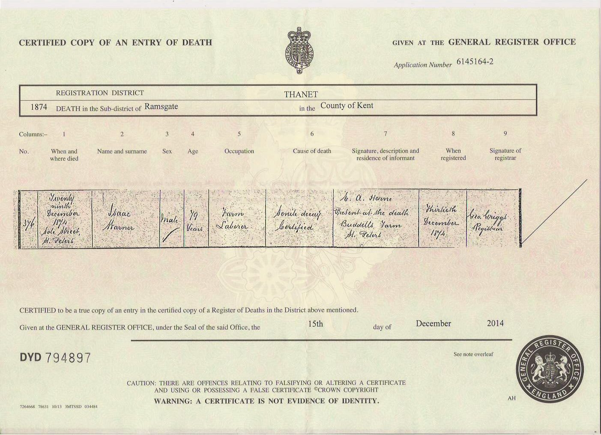
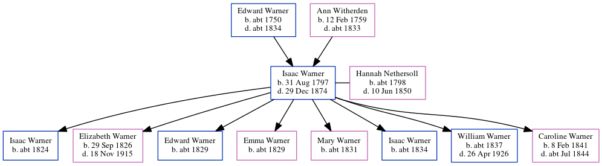

Isaac Warner 1797 - 1874
[ Home ] | [ Calendar ] | [ Surnames Index ] | [ Errors ] | [ Family History ]A labourer and the child of Edward Warner and Ann Witherden, Isaac Warner, the 3 times great-grandfather of Nigel Horne, was born in St Peters, Thanet, Kent, England on 31 Aug 17971,2,3,4,5, was baptised there on 7 Oct 1797 and also married Hannah Nethersoll (with whom he had 8 children: Isaac, Elizabeth Ann, Edward, Emma J, Mary Ann, Isaac, William Robert and Caroline) there on 8 Nov 18236.
During his life, he was living at Callis Court, St Peters, Thanet, Kent, England on 6 Jun 18418; on Tippledore Lane, St Peters in Thanet on 30 Mar 18519 following the death of his wife on 10 Jun 1850; at Serene Place, Broadstairs, Kent on 7 Apr 186111; and at 1 Serene Place, Broadstairs, Kent on 2 Apr 187110.
He died on 29 Dec 1874 in St Peters5 (sole Street. Senile decay) and was buried there on 2 Jan 1875 (Age at death 79KFHS CD29)7.
Parents
- Edward was born c. 1750
- Ann was born on 12 Feb 1759
Children
- Isaac was born c. 1824
- Elizabeth Ann was born on 29 Sept 1826
- Edward was born c. 1829
- Emma J was born c. 1829
- Mary Ann was born c. 1831
- Isaac was born c. 1834
- William Robert was born c. 1837
- Caroline was born on 8 Feb 1841
Citations
- 1841 England Census Online publication - Provo, UT, USA: The Generations Network, Inc., 2006.Original data - Census Returns of England and Wales, 1841. Kew, Surrey, England: The National Archives of the UK (TNA): Public Record Office (PRO), 1841. Data imaged from the National
- 1851 England Census Online publication - Provo, UT, USA: The Generations Network, Inc., 2005.Original data - Census Returns of England and Wales, 1851. Kew, Surrey, England: The National Archives of the UK (TNA): Public Record Office (PRO), 1851. Data imaged from the National
- 1861 England Census Online publication - Provo, UT, USA: The Generations Network, Inc., 2005.Original data - Census Returns of England and Wales, 1861. Kew, Surrey, England: The National Archives of the UK (TNA): Public Record Office (PRO), 1861. Data imaged from the National
- 1871 England Census Online publication - Provo, UT, USA: The Generations Network, Inc., 2004.Original data - Census Returns of England and Wales, 1871. Kew, Surrey, England: The National Archives of the UK (TNA): Public Record Office (PRO), 1871. Data imaged from the National
- England & Wales, FreeBMD Death Index: 1837-1915 Online publication - Provo, UT, USA: The Generations Network, Inc., 2006.Original data - General Register Office. England and Wales Civil Registration Indexes. London, England: General Register Office. © Crown copyright. Published by permission of the Cont
- England Marriages 1538-1973 - Findmypast
- Kent, Canterbury Archdeaconry Burials - Findmypast
- 1841 England, Wales & Scotland Census - Findmypast (was age 40)
- 1851 England, Wales & Scotland Census - Findmypast (was age 53 and the head of the household)
- 1871 England, Wales & Scotland Census - Findmypast (was age 74 and the father-in-law of the head of the household)
- 1861 England, Wales & Scotland Census - Findmypast (was age 65 and the head of the household)
Media
Isaac Warner - death certificate

England Marriages 1538-1973 - R_848220539
England Marriages 1538-1973 - R_848290727
England Marriages 1538-1973 - R_849840146
England & Wales deaths 1837-2007 - BMD/D/1874/4/AZ/000399/277
Kent, Canterbury Archdeaconry burials 1538-1988 - GBPRS/CANT/D/95094374
1841 England, Wales & Scotland Census - GBC/1841/0013965175
1851 England, Wales & Scotland Census - GBC/1851/0005886538
1871 England, Wales & Scotland Census - GBC/1871/0014308858
1861 England, Wales & Scotland Census Transcription - GBC-1861-0003552966
Kent, Canterbury Archdeaconry baptisms 1538-1912 - GBPRS/CANT/B/96346284
Kent, Canterbury Archdeaconry Marriages Transcription - GBPRS-CANT-M-97133214-1
England Births & Baptisms 1538-1975 - R_883212731
Kent marriages and banns - GBPRS/CANT/M/94041179/1
England Births & Baptisms 1538-1975 - R_889842656
Family Tree
Map
Generated by ged2site. Last updated on Jul 3, 2024
Known Issues
Jun 6, 1841: not living at same address as spouse Hannah Nethersoll ('Callis Court, St Peters, Thanet, Kent, England'/'Calais Court, St Peter, Thanet, Kent, England')
Removing leading 0 from residence date '02 Apr 1871'